Индивидуальная покраска
- Подготовка велосипеда к покраске
- Разработка дизайна и согласование

Реставрация · Новосибирск
Все проекты и стоимость обсуждаются индивидуально. Цена и сроки зависят от сложности работы.
Мы всегда готовы решить даже самые сложные задачи.
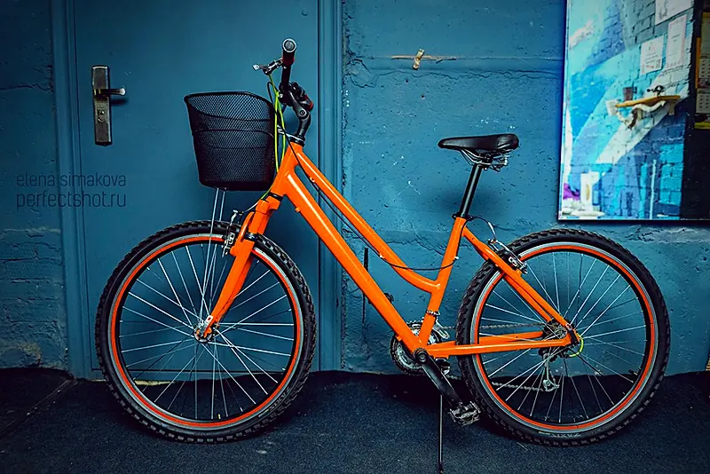
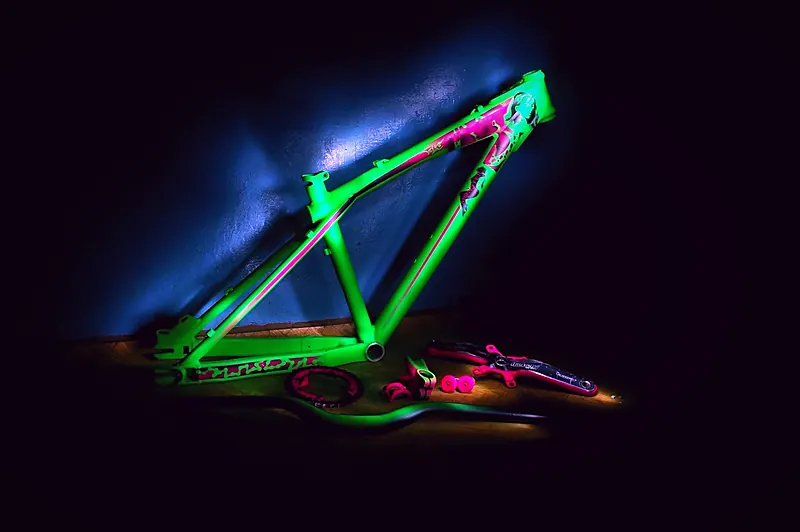
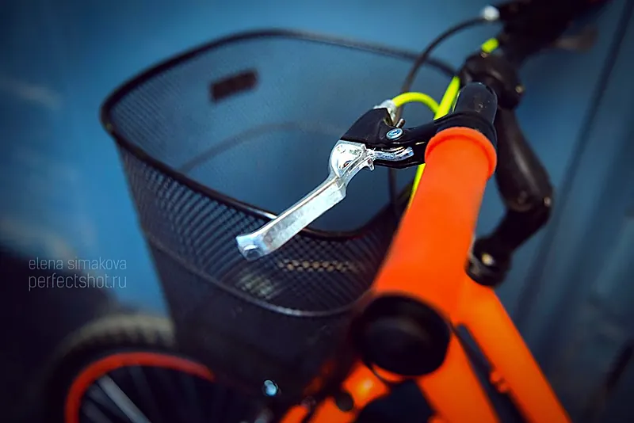
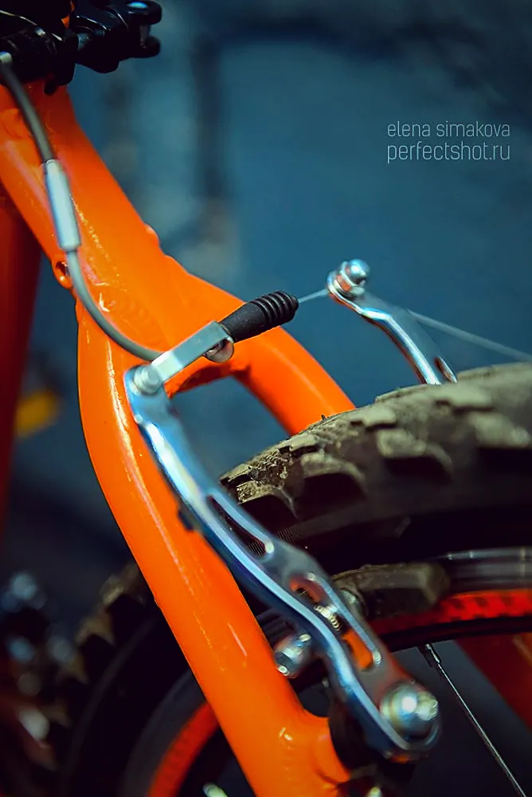
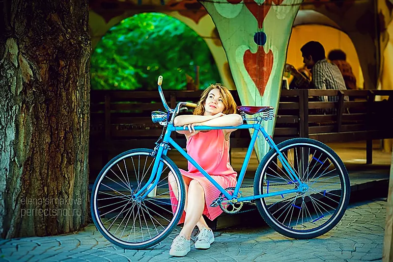
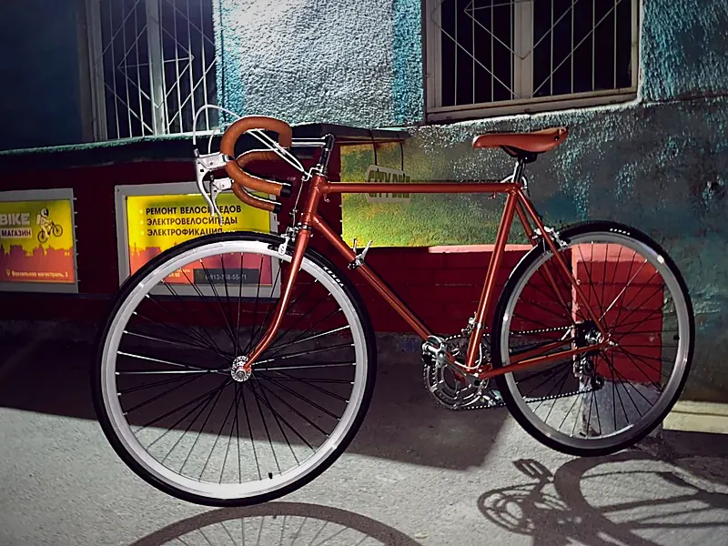
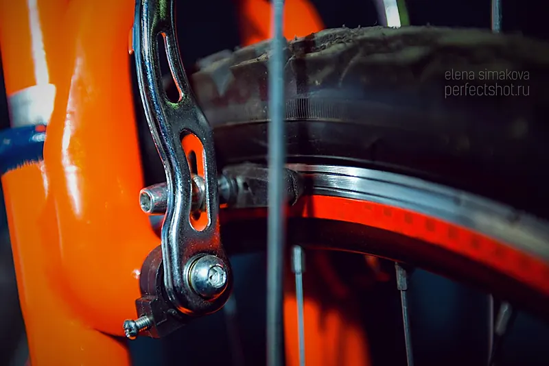
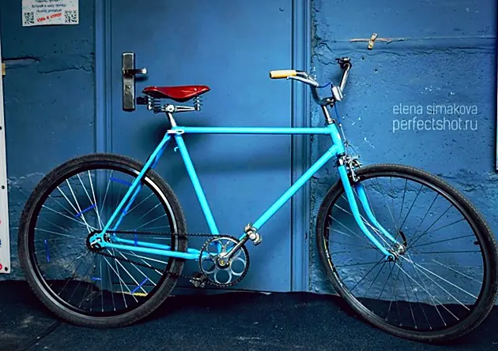
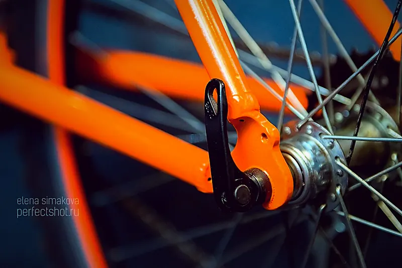
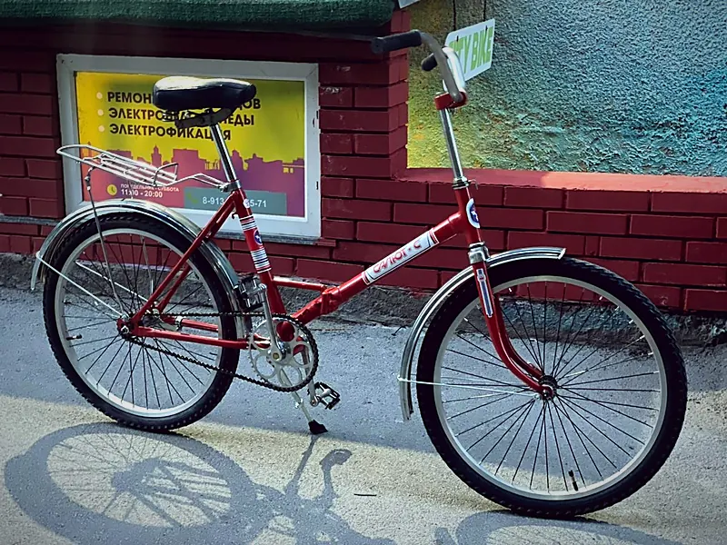
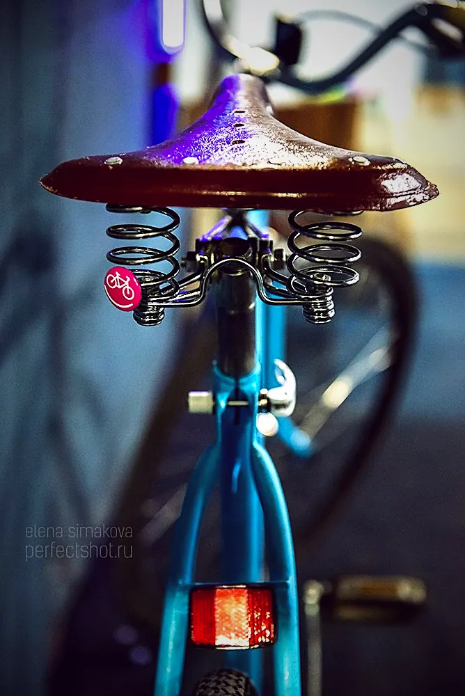
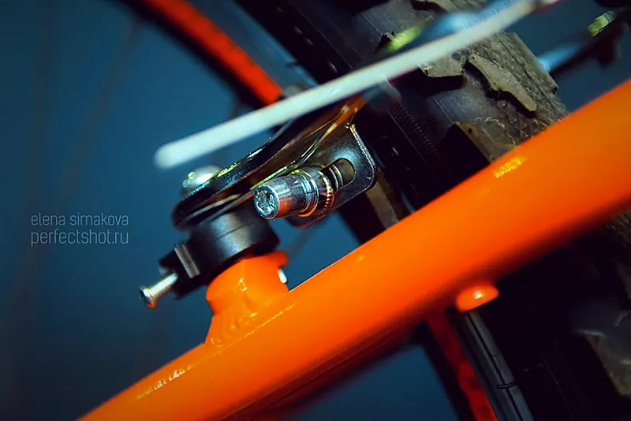
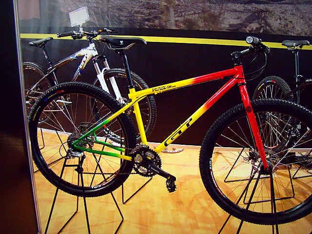
Новосибирск, Вокзальная магистраль, 3, цоколь, въезд со двора. Ежедневно с 11:00 до 20:00, кроме воскресенья.